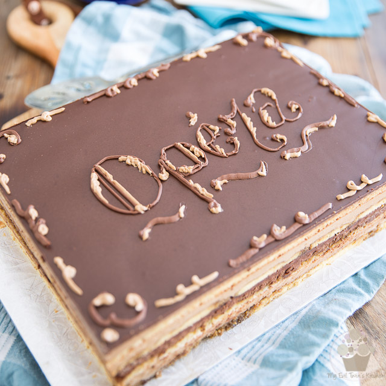

Opera Cake

Description
This classic French cake is made with layers of almond sponge, potent coffee syrup, French buttercream, and chocolate ganache. It's worthy of any special occasion.
Ingredients
- 1 cup almond flour
- 3/4 cup confectioners' sugar
- 1/4 cup all purpose flour
- 3 eggs
- 1 egg yolk
- 3 egg whites
- 1/4 cup superfine sugar
- 2 tablespoons butter melted
Steps
- Preheat the oven to 450F. Lightly grease a 17×11 jelly roll pan and line it with parchment; grease the paper (alternatively, use a Silpat and grease the mat).
- Using a stand mixer fitted with the paddle attachment, beat the almond flour, confectioners’ sugar, all-purpose flour, whole eggs, and egg yolk until combined. Stop to scrape down the sides of the bowl as necessary.
- In a separate bowl, whip the egg whites and fine sugar with an electric hand mixer until a thick, glossy meringue forms. Gently fold the meringue into the almond mixture. Add the melted butter and gently fold again, being careful not to deflate the batter. Pour into the prepared baking pan; spread evenly using an offset spatula. Bake for 5-7 minutes, or until the cake springs back when pressed in the center. Remove from the oven and let cool slightly. The cake should pull away from the sides of the pan, but if it doesn’t, run a knife between the cake edge and the pan to loosen the sponge.
- Invert the cake onto a wire rack and carefully peel away the parchment or silicone liner. Conservatively trim away the browned edges of the cake using a small sharp knife. Set aside to cool completely.
Homepage